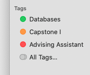

Bringing macOS's Smart Folders to iOS
With the Files app in iOS, Apple brought the closest clone of Finder yet to iOS, highlighting their seriousness in turning their popular mobile platform into a serious full-time computer for an increasing number of people. As they work on bringing it to feature parity, one useful (and relatively unknown) feature of Finder is yet to show face on iOS: Smart Folders.
Smart Folders are essentially "saved searches" (in fact, behind the scenes that is their official name, where you select certain parameters to locate a set of files and these populate a virtual folder of sorts. For example, if I wanted a folder full of all PDFs that contain "CS 4750" in their name, I could do so. Of course, the original location of these files remain unchanged, as the smart folder is simply a list of pointers to these files. Think of tags but automatic, as creation of a new PDF with "CS 4750" in its name would automatically show that PDF in the smart folder.
The closest analog iOS's Files app has, is the Tags feature, which allows you to label files and collect them across the filesystem without altering their physical location. Thankfully, we can take advantage of Tags support on iOS and convert Smart Folders to Tags on macOS, at which point they automatically sync and show up in the iOS Files app.
The workflow starts by going through each Saved Search on your Mac, opening the search and extracting the raw query macOS uses to search the filesystem for files that belong in that Saved Search (the mdfind command in the Terminal is how this works). After populating a dictionary of Saved Searches and their raw queries, I go through every file returned by each raw query, and tag it (using jdberry's wonderful command line tagging utility ) based on the name of the saved search.
Now with clever naming of files (or whatever parameters you use to find files, and there are TONS of options with Smart Folders), you never have to worry about file management again. Presumably.